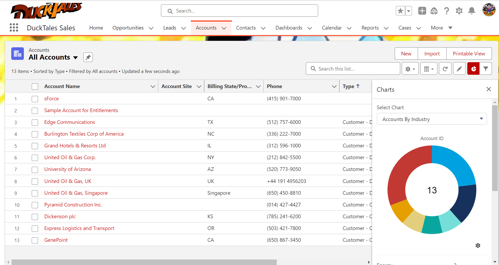

Your Challenges
At DavisTopia Consulting, we understand that businesses face unique challenges when it comes to managing customer relationships and sales processes. From integrating disparate systems to enhancing customer service capabilities, our team is dedicated to providing tailored solutions that address your specific needs.
Our Expertise

At DavisTopia, we offer a full range of Salesforce consulting services, focusing on both administration and development to drive efficiency and success.
Business Analyst & Administration Services
- Business process mapping & optimization
- System Configuration & Customization
- User Management & Security Setup
- Data Management, Migration & Backup
- Reports, Dashboards & KPI Tracking
Development & Integration Services
- Custom Apex Development & Automation
- Lightning Components & Visualforce Pages
- Third-Party System Integration
- AI & Predictive Analytics Implementation
- Custom App Development for Enhanced Functionality
Our Tale
Davistopia was born in Sevierville, Tennessee, out of a need to bridge the gap between businesses and the digital world. We saw small businesses struggling to establish an online presence and larger companies wrestling with outdated, inefficient systems. Instead of waiting for change, we became the solution. In an era where finding business information meant dialing a landline and hoping for an answer, we envisioned a future where everything was seamless, connected, and at your fingertips.
Navigating Salesforce can be complex, but that's where we thrive. At Davistopia, we remove the guesswork by crafting customized solutions—leveraging flows, triggers, and Apex development to streamline operations. Our expertise spans diverse industries, from the tech-savvy Beersonator Enterprises to the family-run Smokey Top Construction and the boutique charm of Fantasy Tresses. No challenge is too big or small; we tailor solutions to fit every need.
Beyond business, we are committed to empowering communities. Through our partnership with the IT Academy, Lifting the Veil, we equip individuals with Salesforce Administration skills, opening doors to new opportunities. Davistopia isn’t just about technology—we’re about transformation, innovation, and building digital success stories that last.
Connect with Us
Have questions or need expert guidance? Reach out to us today!
Free for Nonprofits
Empowering Nonprofits with Free Salesforce Licenses & Expert Setup
Why Salesforce for Nonprofits?
As a nonprofit, managing donors, volunteers, and fundraising efforts efficiently is crucial. Salesforce offers 10 free licenses through its Power of Us program, helping nonprofits streamline operations, boost fundraising, and enhance impact.
What We Offer (at No Cost to You!)
- Free Setup & Configuration – We handle the technical setup so you don’t have to.
- Nonprofit Success Pack (NPSP) Installation – A CRM built specifically for nonprofits.
- Donor & Volunteer Management – Easily track relationships and contributions.
- Training & Support – Learn how to use Salesforce effectively.
Who Qualifies?
- 501(c)(3) nonprofits or equivalent organizations.
- Organizations looking to improve donor and volunteer tracking.
- Teams ready to leverage technology for better impact.
How It Works
- Apply for Free Licenses – We’ll guide you through the process.
- We Set Up Salesforce for You – Get a system customized for your needs.
- Training & Support – Your team learns how to maximize Salesforce.